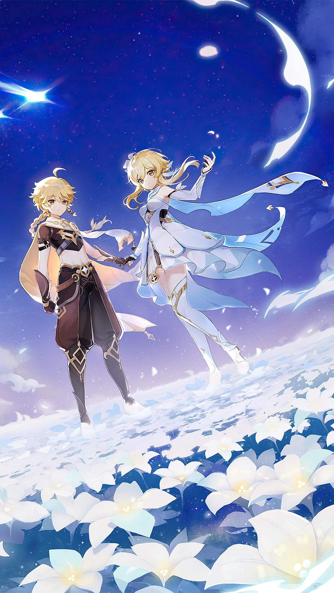

The Director · Renowned Traveller
Having journeyed across seven nations—from the windswept cliffs of Mondstadt to the burning battlegrounds of Natlan—the Traveler possesses an unrivaled, firsthand knowledge of Teyvat's landscapes, customs, local cuisines, and hidden dangers.
After years of traversing continents, scaling mountains, and braving elemental hazards, the Traveler founded Teyvat Express Travel Agency to turn a lifetime of adventuring into seamless, once-in-a-lifetime journeys for others. Whether you are seeking a peaceful retreat among Liyue's mountain mist, a culinary tour of Fontaine's finest cafés, or a high-adrenaline trek through Natlan, the Traveler ensures every itinerary is vetted by someone who has truly walked the path.
Begin your journey